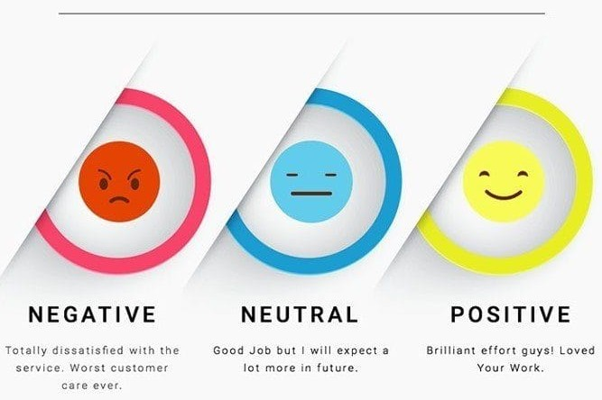

I’m Faria Sitara, a results-driven data enthusiast with a strong foundation in both IT and business analysis. My journey began with a Bachelor of Science in Computer Science from BRAC University, one of the leading institutions in Bangladesh, where I honed my skills in programming, algorithms, and system design. I’m now in the final semester of my Master’s in Management Information Systems (MIS) at the University of Nevada, Las Vegas (UNLV), where I’m honored to be a full merit-based scholarship recipient.
As a Research Assistant at the Lee Business School, I apply my expertise in Python, SQL, machine learning, and data visualization to solve complex business problems. My experience in data manipulation, process optimization, and business intelligence tools has equipped me with the skills to transform raw data into strategic insights that drive impactful decisions. I’m passionate about delivering innovative, technology-driven solutions and confident in my ability to bridge the gap between IT and business to create tangible results.
Experience and Education
August 2023 - Present
Research Assistant
University of Nevada, Las Vegas
August 2023 - May 2025
Master of Science
Management Information Systems
University of Nevada Las Vegas
January 2018 - July 2022
Bachelor of Science
Computer Science
BRAC University
Freelance Projects

This sentiment analysis project applies VADER, HuggingFace's RoBERTa, and TextBlob to analyze Amazon product reviews, extracting actionable insights into customer sentiment. By processing large volumes of feedback, businesses can pinpoint product strengths and weaknesses, optimize customer engagement, and refine marketing strategies.
This project applies machine learning to predict breast cancer diagnoses using a dataset of tumor features. After preprocessing and feature selection, models like Logistic Regression, KNN, and SVM are tested, with hyperparameter tuning improving SVM accuracy to 96%. The project showcases machine learning’s potential for early, accurate cancer detection.
This project leverages the FRED API to analyze and visualize key economic indicators such as the S&P 500 index, unemployment rates, labor force participation, and inflation trends across U.S. states. Using Python, Pandas, Matplotlib, and Plotly, the project extracts real-time data, processes state-level insights, and creates dynamic visualizations to explore relationships like unemployment vs. participation rates and inflation vs. unemployment trends over time.

This project utilizes Pandas, NumPy, and Seaborn for data preprocessing, exploratory data analysis (EDA), and visualization. The dataset is cleaned by handling missing values, duplicates, and type casting. Visualizations, including box plots, histograms, scatter plots, and heatmaps, explore pricing trends, availability, and geographical distribution. Feature engineering techniques, such as price per bed, provide insights into neighborhood-based pricing patterns.
This SQL project analyzes e-commerce data using advanced techniques like WINDOW functions for ranking, CTEs for trend analysis, and GROUP BY for revenue categorization, providing insights into sales, customer behavior, and operational efficiency.
This project utilizes advanced SQL queries to analyze layoffs data, including complex operations like DENSE_RANK(), LAG(), and rolling totals. The analysis covers trends in layoffs, funding comparisons, and industry-specific insights, offering a detailed view of workforce dynamics across different sectors.

This Tableau portfolio showcases a range of data visualization projects, each demonstrating my ability to turn complex data into clear, interactive dashboards that inform business decisions. Explore the visualizations to see how data can drive impactful insights.
Designed dynamic Excel dashboards that transform raw data into meaningful insights, leveraging advanced data modeling, pivot tables, interactive charts, and KPI tracking to drive data-driven decision-making.